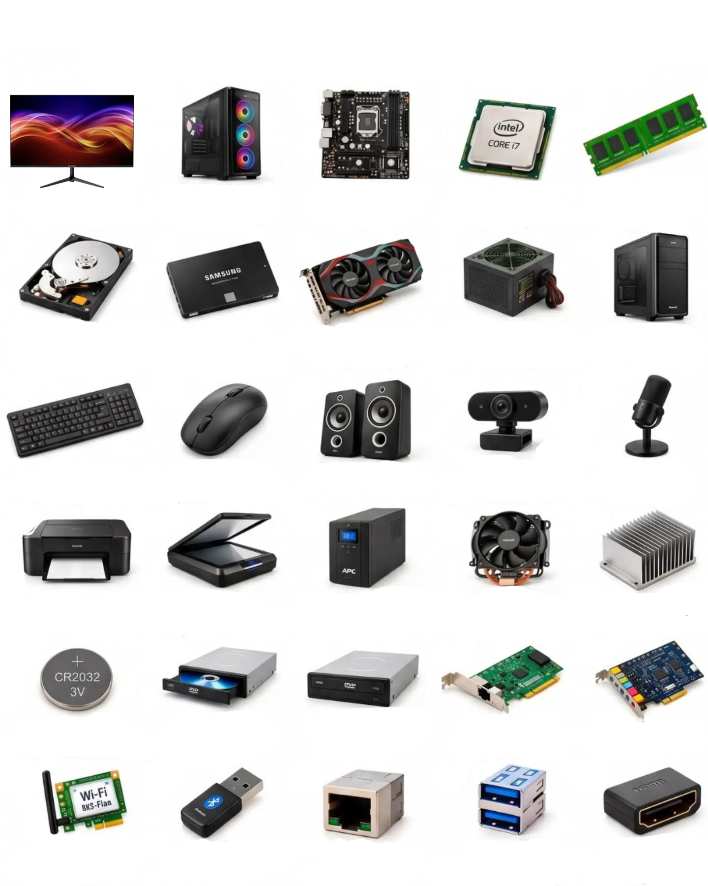

<!doctype html><html lang="pt-PT"><meta charset="utf-8"><meta name="viewport" content="width=device-width,initial-scale=1"><title>Laboratório PC · TIC 9.º ano</title><style>
:root{font-family:system-ui,sans-serif;color:#183146;background:#f1f5f7}*{box-sizing:border-box}body{margin:0}header{background:#102e40;color:white;padding:35px max(6vw,20px)}header small{color:#75e1c0;letter-spacing:2px}h1{font-size:clamp(30px,5vw,52px);margin:12px 0}header p{color:#c3d5df;max-width:650px;line-height:1.6}main{max-width:1120px;margin:auto;padding:24px}nav{display:flex;gap:10px;flex-wrap:wrap;margin-bottom:25px}button,select{font:inherit;border-radius:10px;padding:12px 18px;border:1px solid #cad7df;cursor:pointer;background:white;color:#183146}button:hover{border-color:#087e70;background:#edf9f5}button:focus-visible,select:focus-visible{outline:3px solid #e49d18;outline-offset:3px}button.active,.primary{background:#087d6d;color:white;border-color:#087d6d}.card{background:white;border:1px solid #dce5ea;border-radius:18px;padding:24px;box-shadow:0 6px 20px #17374d08}.meta{display:flex;justify-content:space-between;gap:15px;align-items:center;flex-wrap:wrap}.tag{font-size:13px;color:#087d6d;font-weight:700}.grid{display:grid;grid-template-columns:repeat(auto-fit,minmax(210px,1fr));gap:16px}.photo{position:relative;overflow:hidden;background:white;margin:15px auto;width:270px;max-width:100%}.photo img{position:absolute;width:1408px;max-width:none;height:1760px}.choices{display:grid;grid-template-columns:1fr 1fr;gap:12px;margin:22px 0}.choices button{text-align:left;min-height:66px}.good{background:#dcf5e8!important;border-color:#15835e!important}.bad{background:#ffe9e7!important;border-color:#b94a40!important}.feedback{padding:16px;background:#f0f5f8;border-radius:10px;line-height:1.6}progress{width:100%;accent-color:#087d6d;height:10px}p{line-height:1.6}footer{padding:30px;color:#637482;font-size:13px;max-width:1120px;margin:auto}input{font:inherit;padding:13px;width:100%;border:1px solid #bacbd5;border-radius:10px;margin:16px 0}.catalog .photo{transform:scale(.85);transform-origin:center;margin-top:0;margin-bottom:0}.catalog h3{margin-top:0}.note{border-left:4px solid #e4b345;padding:10px 18px;background:#fffaed} .summary{font-size:46px;font-weight:800;color:#087d6d}@media(max-width:600px){main{padding:16px}.choices{grid-template-columns:1fr}.card{padding:18px}header{padding:25px 20px}}
</style><header><small>MISSÃO HARDWARE / TIC · 9.º ANO</small><h1>Por dentro do computador.</h1><p>Explora 30 peças e ligações. Aprende a reconhecê-las e descobre o papel de cada uma.</p></header><main><nav aria-label="Atividades"><button onclick="show('learn')" id="learn">01 · Explorar</button><button onclick="show('game')" id="game">02 · Identificar</button><button onclick="show('quiz')" id="quiz">03 · Quiz</button><button onclick="show('teacher')" id="teacher">Guia da aula</button></nav><section id="app"></section></main><footer>Base visual: imagem fornecida pelo docente. Terminologia e explicações adaptadas ao português de Portugal. O progresso da ronda fica apenas nesta página; não são recolhidos dados pessoais.</footer><script>
const D=[{"name": "Monitor", "fn": "Apresenta imagens e informação visual.", "cat": "saída", "x": 12, "y": 172, "w": 270, "h": 185}, {"name": "Computador de secretária", "fn": "Conjunto que inclui a caixa e os componentes internos. A CPU é o processador.", "cat": "sistema", "x": 302, "y": 172, "w": 270, "h": 185}, {"name": "Placa principal (motherboard)", "fn": "Liga os componentes e permite a comunicação entre eles.", "cat": "interno", "x": 586, "y": 172, "w": 270, "h": 185}, {"name": "Processador (CPU)", "fn": "Executa instruções e realiza cálculos.", "cat": "interno", "x": 874, "y": 172, "w": 270, "h": 185}, {"name": "Memória RAM", "fn": "Guarda temporariamente dados e programas em utilização; perde-os sem energia.", "cat": "memória", "x": 1155, "y": 172, "w": 270, "h": 185}, {"name": "Disco rígido (HDD)", "fn": "Guarda ficheiros e programas em discos magnéticos, mesmo sem energia.", "cat": "armazenamento", "x": 12, "y": 467, "w": 270, "h": 165}, {"name": "SSD", "fn": "Guarda ficheiros sem peças móveis; geralmente é mais rápido do que um HDD.", "cat": "armazenamento", "x": 302, "y": 467, "w": 270, "h": 165}, {"name": "Placa gráfica (GPU)", "fn": "Processa gráficos, imagens e vídeo.", "cat": "interno", "x": 586, "y": 467, "w": 270, "h": 165}, {"name": "Fonte de alimentação", "fn": "Converte a energia da tomada nas tensões necessárias aos componentes.", "cat": "energia", "x": 874, "y": 467, "w": 270, "h": 165}, {"name": "Caixa do computador", "fn": "Aloja e protege os componentes internos.", "cat": "estrutura", "x": 1155, "y": 467, "w": 270, "h": 165}, {"name": "Teclado", "fn": "Permite introduzir texto e comandos.", "cat": "entrada", "x": 12, "y": 752, "w": 270, "h": 156}, {"name": "Rato", "fn": "Permite mover o ponteiro e selecionar elementos.", "cat": "entrada", "x": 302, "y": 752, "w": 270, "h": 156}, {"name": "Colunas de som", "fn": "Reproduzem áudio.", "cat": "saída", "x": 586, "y": 752, "w": 270, "h": 156}, {"name": "Webcam", "fn": "Capta imagens e vídeo.", "cat": "entrada", "x": 874, "y": 752, "w": 270, "h": 156}, {"name": "Microfone", "fn": "Capta som e voz.", "cat": "entrada", "x": 1155, "y": 752, "w": 270, "h": 156}, {"name": "Impressora", "fn": "Produz documentos e imagens em papel.", "cat": "saída", "x": 12, "y": 1017, "w": 270, "h": 151}, {"name": "Digitalizador (scanner)", "fn": "Converte documentos físicos em imagens digitais.", "cat": "entrada", "x": 302, "y": 1017, "w": 270, "h": 151}, {"name": "UPS (alimentação ininterrupta)", "fn": "Fornece energia temporária quando a eletricidade falha.", "cat": "energia", "x": 586, "y": 1017, "w": 270, "h": 151}, {"name": "Refrigerador com ventoinha", "fn": "Usa uma ventoinha e um dissipador para arrefecer componentes.", "cat": "arrefecimento", "x": 874, "y": 1017, "w": 270, "h": 151}, {"name": "Dissipador de calor", "fn": "Transfere calor do componente para o ar, através das suas aletas.", "cat": "arrefecimento", "x": 1155, "y": 1017, "w": 270, "h": 151}, {"name": "Pilha da placa principal", "fn": "Mantém o relógio e, em alguns sistemas, configurações quando o PC está desligado.", "cat": "energia", "x": 12, "y": 1283, "w": 270, "h": 137}, {"name": "Leitor ótico", "fn": "Lê discos compatíveis, como CD ou DVD; só grava se também for gravador.", "cat": "armazenamento", "x": 302, "y": 1283, "w": 270, "h": 137}, {"name": "Gravador de DVD", "fn": "Lê e grava DVDs compatíveis.", "cat": "armazenamento", "x": 586, "y": 1283, "w": 270, "h": 137}, {"name": "Placa de rede Ethernet", "fn": "Permite ligar o computador a uma rede por cabo.", "cat": "rede", "x": 874, "y": 1283, "w": 270, "h": 137}, {"name": "Placa de som", "fn": "Processa a entrada e a saída de áudio.", "cat": "interno", "x": 1155, "y": 1283, "w": 270, "h": 137}, {"name": "Placa Wi-Fi", "fn": "Permite ligar a uma rede sem fios; a internet depende dessa rede.", "cat": "rede", "x": 12, "y": 1523, "w": 270, "h": 134}, {"name": "Adaptador Bluetooth", "fn": "Permite comunicar a curta distância com dispositivos Bluetooth.", "cat": "rede", "x": 302, "y": 1523, "w": 270, "h": 134}, {"name": "Porta Ethernet (RJ-45)", "fn": "Recebe o cabo de rede Ethernet.", "cat": "ligação", "x": 586, "y": 1523, "w": 270, "h": 134}, {"name": "Porta USB", "fn": "Liga periféricos e pode transferir dados e fornecer energia.", "cat": "ligação", "x": 874, "y": 1523, "w": 270, "h": 134}, {"name": "Porta HDMI", "fn": "Transmite áudio e vídeo digital para um ecrã compatível.", "cat": "ligação", "x": 1155, "y": 1523, "w": 270, "h": 134}];let mode='learn',round=[],step=0,score=0,answered=false,missed=[];
const app=document.querySelector('#app');const shuffle=a=>[...a].sort(()=>Math.random()-.5);
function photo(i){let d=D[i];return `<div class="photo" style="height:${d.h}px" role="img" aria-label="Fotografia da peça a identificar"></div>`}
function show(m){mode=m;document.querySelectorAll('nav button').forEach(b=>b.classList.toggle('active',b.id===m));if(m==='learn')learn();else if(m==='teacher')teacher();else setup()}
function learn(){app.innerHTML=`<div class="meta"><h2>O teu atlas de hardware</h2><span class="tag">30 PEÇAS E LIGAÇÕES</span></div><p>Observa as imagens, lê as funções e prepara-te para as missões.</p><p class="note">Atenção: a caixa não é a CPU. A CPU é o processador. O computador completo reúne vários componentes.</p><label for="search">Procurar uma peça ou função</label><input id="search" placeholder="Ex.: memória, áudio, energia…" oninput="catalog(this.value)"><div id="catalog" class="grid catalog"></div>`;catalog('')}
function catalog(q){q=q.toLocaleLowerCase('pt');document.querySelector('#catalog').innerHTML=D.map((d,i)=>({...d,i})).filter(d=>(d.name+' '+d.fn+' '+d.cat).toLocaleLowerCase('pt').includes(q)).map(d=>`<article class="card"><span class="tag">${String(d.i+1).padStart(2,'0')} / ${d.cat}</span>${photo(d.i)}<h3>${d.name}</h3><p>${d.fn}</p></article>`).join('')||'<p>Não foram encontradas peças.</p>'}
function setup(){app.innerHTML=`<div class="card"><span class="tag">${mode==='game'?'DESAFIO VISUAL':'FUNÇÕES E APLICAÇÕES'}</span><h2>${mode==='game'?'Reconheces esta peça?':'Para que serve?'}</h2><p>${mode==='game'?'Observa a fotografia e escolhe o nome correto.':'Lê a pergunta e escolhe a resposta correta. Cada resposta inclui uma explicação.'} Cada acerto vale 1 ponto. Não há limite de tempo.</p><label for="length">Duração da ronda </label><select id="length"><option value="10">10 perguntas</option><option value="30">30 perguntas · todas as peças</option></select><p><button class="primary" onclick="start()">Começar missão →</button></p></div>`}
function start(ids){round=shuffle(ids||D.map((_,i)=>i)).slice(0,ids?ids.length:Number(document.querySelector('#length').value));step=0;score=0;missed=[];render()}
function render(){answered=false;let i=round[step],d=D[i];let options=shuffle([i,...shuffle(D.map((_,j)=>j).filter(j=>j!==i)).slice(0,3)]);app.innerHTML=`<div class="card"><div class="meta"><span class="tag">${mode==='game'?'IDENTIFICAR':'QUIZ'} · ${step+1} / ${round.length}</span><span>${score} pontos</span></div><progress value="${step}" max="${round.length}" aria-label="Progresso"></progress><h2>${mode==='game'?'Qual é o nome desta peça?':`Qual é a função de: ${d.name}?`}</h2>${mode==='game'?photo(i):''}<div class="choices">${options.map(j=>`<button data-id="${j}" onclick="answer(${j})">${mode==='game'?D[j].name:D[j].fn}</button>`).join('')}</div><div id="feedback" aria-live="polite"></div><div id="next"></div></div>`}
function answer(j){if(answered)return;answered=true;let i=round[step],ok=i===j;if(ok)score++;else missed.push(i);document.querySelectorAll('.choices button').forEach(b=>{b.disabled=true;if(+b.dataset.id===i)b.classList.add('good');else if(+b.dataset.id===j)b.classList.add('bad')});document.querySelector('#feedback').innerHTML=`<div class="feedback"><strong>${ok?'Correto!':'Vamos aprender com esta resposta.'}</strong><br><strong>${D[i].name}:</strong> ${D[i].fn}</div>`;document.querySelector('#next').innerHTML=`<p><button class="primary" onclick="advance()">${step+1===round.length?'Ver resultado':'Próxima pergunta →'}</button></p>`}
function advance(){step++;if(step<round.length)render();else finish()}
function finish(){app.innerHTML=`<div class="card"><span class="tag">MISSÃO CONCLUÍDA</span><h2>${score===round.length?'Excelente trabalho!':'Cada descoberta conta.'}</h2><div class="summary">${score} / ${round.length}</div><p>${Math.round(score/round.length*100)}% de respostas corretas. ${missed.length?'Revê as peças abaixo e volta a experimentar.':'Reconheceste todas as respostas desta ronda.'}</p>${missed.map(i=>`<p><strong>${D[i].name}</strong> — ${D[i].fn}</p>`).join('')}<button class="primary" onclick="setup()">Nova ronda</button> ${missed.length?'<button onclick="retry()">Treinar as que falhei</button>':''} <button onclick="show('learn')">Voltar ao atlas</button></div>`}
function retry(){start([...missed])}
function teacher(){app.innerHTML=`<article class="card"><span class="tag">PARA O DOCENTE</span><h2>Uma aula, três missões</h2><p><strong>Objetivos:</strong> identificar hardware, explicar funções e distinguir entrada, saída, processamento, armazenamento e ligações.</p><ol><li><strong>Explorar · 10 min:</strong> em pares, consultar o atlas e escolher cinco peças para explicar ao colega.</li><li><strong>Identificar · 10 min:</strong> jogar uma ronda de 10 imagens, alternando quem responde.</li><li><strong>Quiz · 15 min:</strong> responder individualmente a 10 ou 30 perguntas e rever o feedback.</li><li><strong>Aplicar · 10 min:</strong> discutir: que peças permitem fazer uma videochamada? Onde guardar um trabalho? O que acontece aos dados na RAM se faltar energia?</li><li><strong>Saída · 5 min:</strong> cada aluno indica uma peça, a sua função e um exemplo de utilização.</li></ol><p><strong>Avaliação formativa:</strong> usar a pontuação da ronda e a explicação oral. Pedir aos alunos que registem o resultado; a aplicação não guarda classificações.</p><p class="note"><strong>Notas científicas:</strong> CPU significa processador. RAM é volátil; HDD e SSD conservam dados sem energia. Leitor ótico e gravador não são sinónimos. A placa Wi-Fi dá acesso à rede sem fios, não garante internet. A fotografia 2 representa um computador montado; a 10 representa a caixa. As fotografias de leitores e gravadores podem ser semelhantes: a função distingue-os.</p><p><strong>Inclusão:</strong> pode usar-se teclado (Tab e Enter), não há cronómetro e o feedback inclui texto. No desafio visual, alunos com dificuldades de visão podem trabalhar em par ou optar pelo quiz textual.</p><button onclick="window.print()">Imprimir guia</button></article>`}
show('learn');
</script></html>